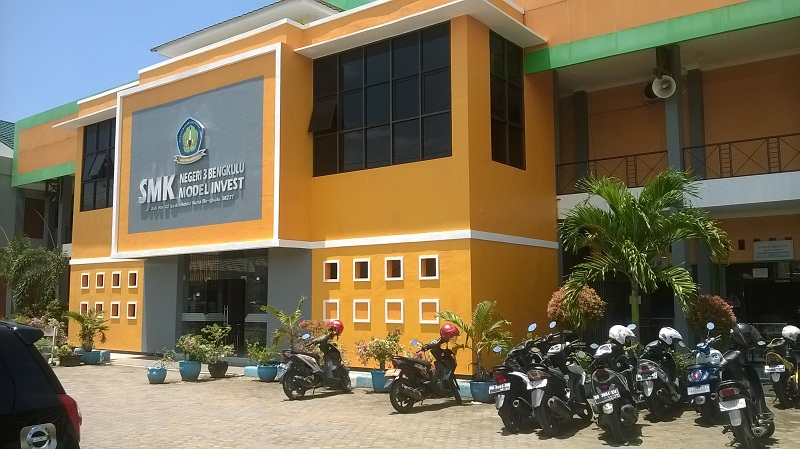

Official School — SMKN 3 Bengkulu City
About Our School
SMK Negeri 3 Bengkulu City is one of the leading vocational schools in Bengkulu Province, dedicated to nurturing creative, innovative, and skilled students ready to face the challenges of the modern industry.
Supported by professional educators, advanced facilities, and a strong learning environment, SMKN 3 Bengkulu continues to lead in vocational education — shaping graduates who are disciplined, competent, and globally competitive in the world of technology and engineering.
